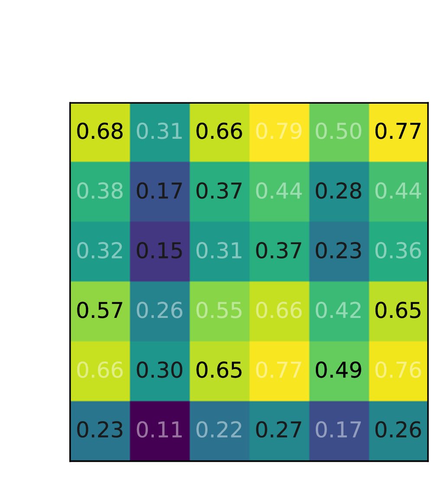
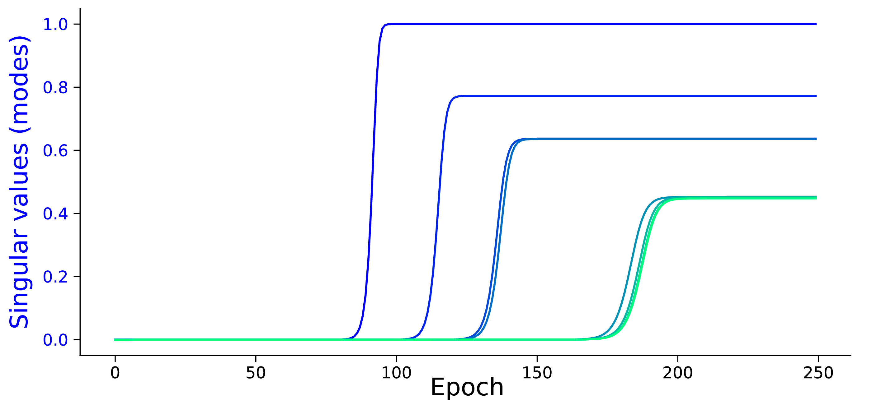
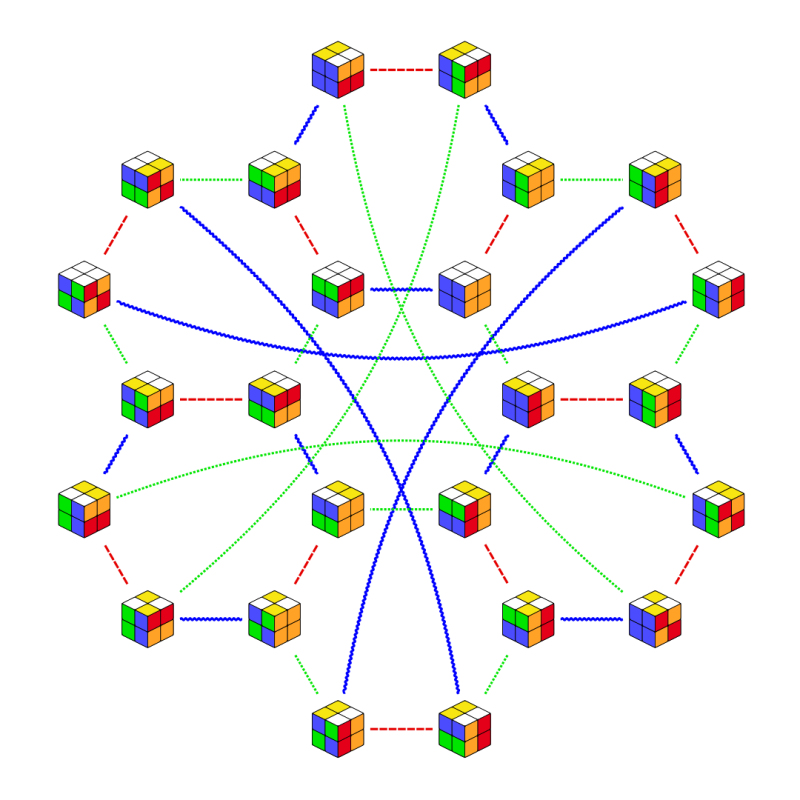

Beyond Smooth Manifolds
:
The Algebraic Occam's Razor
Ben Dongsung Huh
|
Centaur AI
Geometric Compression
DL Interpolates over Low-Dimensional Manifold

Canonical Problem
Matrix Factorization → Matrix Completion


Low-Rank as Occam's Razor

Rank: Deep Learning's implicit notion of simplicity.
Algebraic Compression
Algebraic Structures over a Finite Set of Symbols

Canonical Problem
Tensor Factorization
→ Algebraic Completion
(matrix-embedding)


Associativity as Occam's Razor
-
Theorem: Regularizing via MDL principle natively minimizes Associativity Violations.
Associativity: Implicit notion of simplicity for Algebraic Structures
Results
Recovers Exact Group Tables & Unitary Representations
Compression Efficiency
| Target | gzip | Our Method | MDL Limit |
|---|---|---|---|
| $C_{24}$ | 77 Bytes |
76 Bytes |
~30 Bytes |
| $S_4$ | 206 Bytes | ||
| $S_4$ Isotope | 366 Bytes |
Expanding the Horizons of Generalization
Integrating two distinct generalization paradigms: